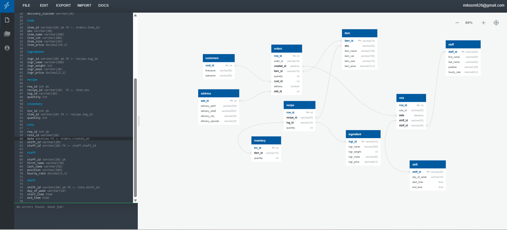

SQL Projects
Projects involving SQL database design, data cleaning, exploratory analysis, and extracting business insights from raw datasets.
Pizza Business Analysis

Download the files
Pizza Bussiness SQL Zip FilesThis project analysed the operational performance of a pizza business using MySQL. The objective was to design a structured relational database and use SQL analysis to understand key business areas including sales, orders, inventory management, delivery, and staff operations.
The raw business data was transformed into a relational database structure by creating an Entity Relationship Diagram (ERD), defining table relationships, and normalising the database to improve organisation and data integrity.
The database development and analysis included:
- Designing database relationships using primary and foreign keys
- Creating and populating tables using MySQL and Navicat
- Analysing orders, pizza performance, and customer delivery information
- Calculating ingredient usage, ingredient costs, and remaining inventory levels
- Analysing staff working hours and salary costs
- Creating reusable SQL views for efficient future analysis
The SQL analysis explored areas such as:
- Total orders and product demand patterns
- Top-performing pizza items
- Ingredient consumption based on sales volume
- Inventory stock status
- Staff operational costs
The final database structure allowed business data to be analysed efficiently, providing insights into sales performance, resource usage, and operational processes. Future improvements include connecting the database to Power BI for interactive dashboard development and visual reporting.
Global Layoffs Analysis
Download the files
Global Layoffs SQL Zip FilesThis project focused on analysing global layoff data between 2020 and 2023 using MySQL. The objective was to clean, standardise, and analyse a large dataset to identify trends in layoffs across companies, industries, countries, and time periods.
The raw dataset was prepared through SQL data cleaning techniques before exploratory analysis was performed. The project demonstrated the process of transforming unstructured data into a reliable dataset suitable for business analysis.
The data cleaning process included:
- Creating a staging table to preserve the original dataset
- Identifying and removing duplicate records using ROW_NUMBER() and window functions
- Standardising inconsistent values across industries and countries
- Converting date fields into the correct format
- Handling missing and null values
- Removing unnecessary columns after cleaning
Exploratory Data Analysis (EDA) was performed using SQL queries to analyse:
- Total layoffs by company, industry, and country
- Layoff trends across different years and months
- Impact of layoffs across company stages
- Companies with the highest number of layoffs
- Rolling layoff totals over time
The analysis identified major layoff trends, including increased layoffs during 2022 and early 2023, with large technology companies contributing significantly to total layoffs. The project demonstrated SQL skills in data cleaning, exploratory analysis, and extracting business insights from raw datasets.
Future improvements include connecting the cleaned dataset to Power BI to develop interactive dashboards and visual reporting.